Odds & Ends
The following notes relate to various small jobs or points of interest that I have done or found at various times. They have been brought together here because they don't really merit a page to themselves.
Steering Geometry
Due to a brake problem when I first bought TC4985 (see below) I arranged to take the car to Cripps in Storrington for investigation. I also asked them to look at the steering since I was unsure if I should expect that degree of play. So I decided that, before taking the car to Cripps, I should try to check the steering geometry. Following an article in the August and October 2013 issues of Totaly T-Type I measured:
- Chassis diagonals (so as to check for any distortion of the chassis)
- Camber angle on both front wheels
- Castor angle for both front wheels
 The Totally T-Type article (from which the diagram is taken) suggests that the two diagonals should be within a ¼" of each other. So as to measure these diagonals I projected the four points on the chassis down on to the ground using a plumb bob and marked them with chalk. Then I measured between the chalk marks. I estimate that I introduced an error of ±¼" and I was happy that my two measurements were within ½" of each other. So I concluded that the chassis is 'square'.
The Totally T-Type article (from which the diagram is taken) suggests that the two diagonals should be within a ¼" of each other. So as to measure these diagonals I projected the four points on the chassis down on to the ground using a plumb bob and marked them with chalk. Then I measured between the chalk marks. I estimate that I introduced an error of ±¼" and I was happy that my two measurements were within ½" of each other. So I concluded that the chassis is 'square'.
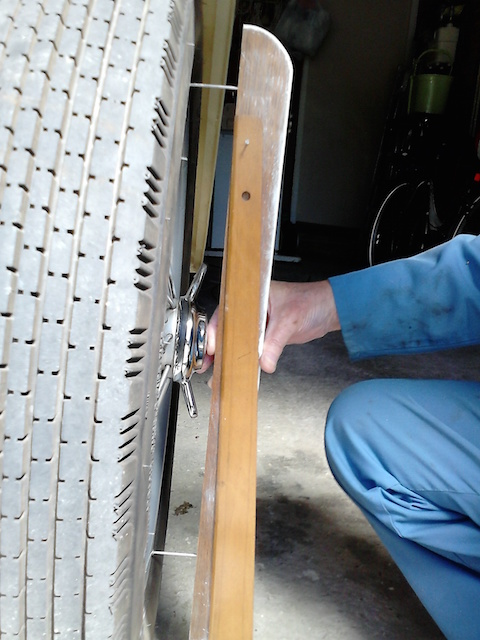Measuring the camber angle was a little more complex. As can be seen from the photo, I made a device consisting of a piece of hardwood into which I hammered (into pre-drilled holes) two large nails, each protruding the same amount. Hanging from the wood, via a loose-fitting nail, was a T-square (any straight edge would have done). With the large nail heads on the rim of the wheel, the T-square swung (under its own weight) to the vertical, forming a right-angled triangle with the edge of the wood. Measuring the base of the triangle and the deflection (opposite the angle of interest) allowed me to calculate the camber angle. Both sides gave the same deflection, calculated as 2.5°, which is close to the 3° stated in the article. Considering my crude measuring device and the fact that I got the same answer for both sides, I'm happy that the camber angle is correct and, more importantly, the front axle is not bent.
Finally there is the question of the castor angle. According to the article, the castor angle on a TC is made up of 5° due to the spring slope plus 3° due to the axle, making a total castor angle of 8°. This can be reduced to 5.5° by inserting a taper plate between the axle and the spring plate.
I jacked up the front of the car, lowered it on to axle stands under the spring plates and removed the front wheels. Using the same device, but with nails close enough to locate on the top part of the stub axle and the lower part of the axle enclosing the king pin. The alignment of these two surfaces and any slight difference in th protrusion of the nails will add to the measurement error. However, I measured close to 6° on both sides, so at least it is in the right ballpark.
The one measurement that I am unable to make is the toe-in, so I will get Cripps to check this. There is no feathering or uneven wear on the tyres, but they are relatively new such that wear is unlikely to show. According to the TC manual, the toe-in should be 3/16" (5mm).
Colin Cripps said that the tracking is within tolerance and the steering, although slightly heavy, is fine. He seemed to think that this is due to the steering box being adjusted fairly tightly. However, slackening it will increase the play in the steering. Since the steering moves very easily when the wheels are off the ground, I have my doubts about the box adjustment being to blame. The Bishops Cam box has a Tompkins Kit fitted, which locates a roller bearing to the top of the sector shaft (that is rotated by the worm gear) and provides an adjustment screw.
He couldn't get grease into the near-side king pin lower nipple either. He said that the lower bush is protruding slightly and so the hole in the bush (and spiral groove) does not align with the nipple. I could try drilling through the bush, but I should not try to force the bush in. The bushes are a press fit and so not something that I could do.
Go to top.Brakes
When I first bought TC4985 I could drive about ten miles and then the brakes would seize. Since this applied to all the wheels (I jacked up each wheel to check), so it was something to do with the master cylinder. I arranged to take the car to Cripps in Storrington, who concluded that the piston in the old master cylinder was corroded and so would not return properly. So after 20 presses the brakes were jammed on. The car now has a new master cylinder (and Dot 4 Girling brake fluid), but the brake shoes are still slackened right off. I need to adjust them. Colin Cripps commented that the handbrake cables have stretched (one having a ‘spreader’ in it to shorten it). They really need replacing!
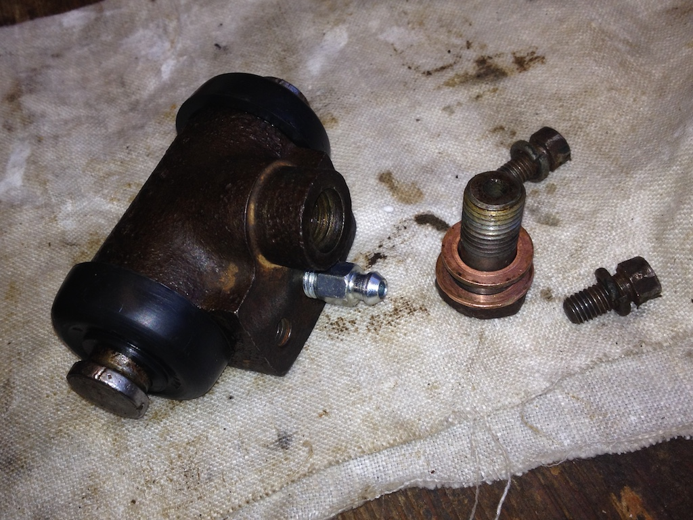That was in 2015, so in November of that year I replaced the handbrake cables. Then, in the autumn of 2019 and while doing a routine service, I decided to replace the brake fluid since it had been in there four years. However, I discovered that I couldn't undo the bleed nipples. They had corroded over the years and the correct size spanner simply slipped. So I bought new bleed nipples, but in order to remove the old ones I had to remove the slave cylinder from the backplate. However, it was the middle of February 2020 before I got around to starting this job. My first problem was that I couldn't undo the banjo bolt on the near-side rear cylinder. Extending the leverage using a large box spanner finally freed it after much effort. So I cleaned up the cylinder and replaced the rubber seals and boots. When replacing the cylinder I had to ‘lean’ on the spanner to tighten the banjo bolt to stop it leaking. I'd started at the furthest cylinder from the master cylinder having read that it was best to start there and gradually work closer. I did a rough calculation based on the internal diameter and length of the pipe to ensure that I had pushed enough fluid through before tightening the new bleed nipple.
I followed a similar routine for the off-side rear cylinder and then I turned my attention to the front near-side wheel. No banjo fitting here, the flexible pipe screws directly into the slave cylinder, but the next problem, it wouldn’t budge. After removing the cylinder from the backplate, so that the hose was dangling through the backplate, and removing the rubber boots, pistons, rubber seals and spring from the cylinder, I was then able to pass a length of 22mm copper pipe through the cylinder, extend the spanner on the hose with a large box spanner and, with the extra leverage, free the hose. I discovered that several pieces were missing from the two crown washers. You now get a modified spring that replaces the original spring and the two crown washers.
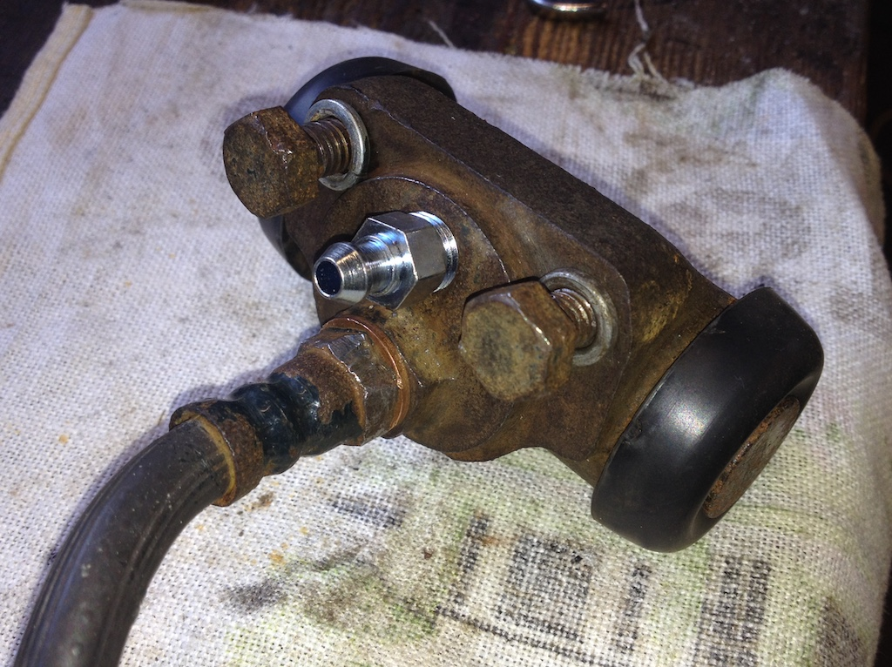 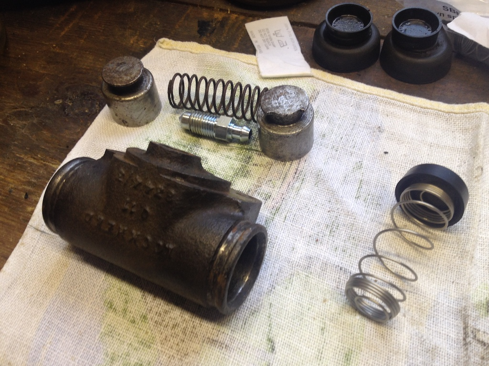However, even with my copper pipe I couldn't free the hose from the back of the cylinder. My only option was to undo the other end of the hose, where it joined the copper brake pipe at a bracket on the chassis. To my surprise, although this is quite a complicated union and had been pained over, it came apart easily. So I could now hold the cylinder in the vice and try removing the hose. But no luck, the hexagonal bolt on the hose simply deformed, even with a well fitting spanner. So I gave up and cleaned the cylinder with the hose attached, installing the new spring and seals. Reconnecting the hose to the copper brake pipe was fiddly. It was difficult to get the connector on the pipe aligned with the threaded hole in the hose.
Finally, after a period of over five weeks, I finished replacing the brake fluid, but by then we were in the middle of the Covid-19 lockdown and I couldn't take the car for a test drive!
Go to top.Oil Levels
Checking the engine oil level is easy. Once you have opened the near-side bonnet the dipstick is easily visible and accessibile. However, I could not see how to check the oil level in the gearbox and looking at the back axle from under the car suggested that topping up the oil would be almost impossible! However, after visiting Stewart Penfound (a TA owner, but with an XPAG angine and gearbox) in Brighton early in August 2015 I firstly discovered that there should be a dipstick in the gearbox and secondly that by removing the tonneau floor you could easily get at the back axle!
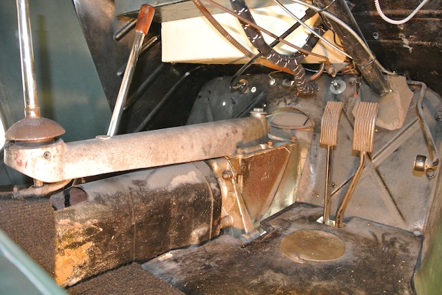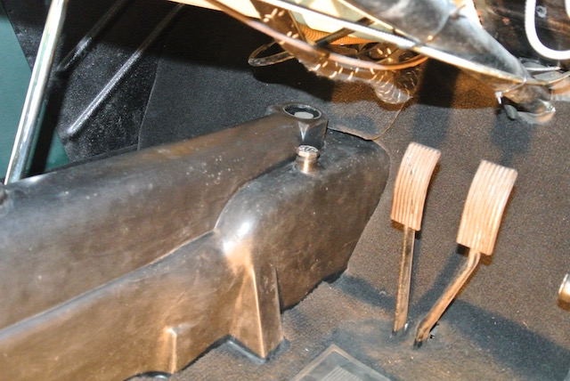It was soon clear that the dipstick was there, it was just under the rubber gearbox cover! Removing the cover, extracting the dipstick, refitting the cover and then inserting the dipstick solved the problem. Actually the cover lifts the dipstick about an inch above the hole into which it fits, so to check the oil level it is necessary to push the dipstick down, distorting the cover, so as to get a true reading. The top of the dipstick and the oil filler plug can be seen in the photo.
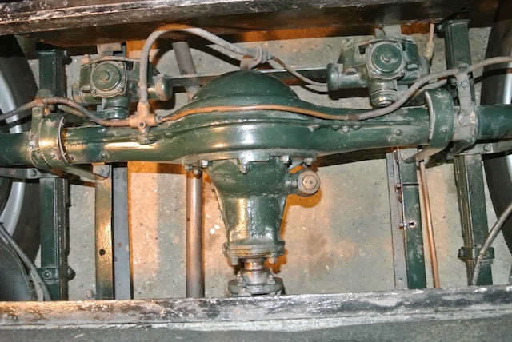In the final photo you can see that, once you have unscrewed the floor of the tonneau and removed it, the filler plug for the back axle is easily reached. You simply add oil until it starts to escape from the hole in the side of the casing from which the plug has been unscrewed.
Go to top.Side Screen Box
 It has always been difficult to get the side screens, in their bag, into the storage box. There just didn't seem to be enough height. Looking into the box towards the end of August 2016 I could see what appeared to be two pieces of wood in the bottom, whereas Sherrill only shows one, which is at the rear and has the bolts that hold the body to the chassis. So I screwed a screw part-way into one end of the front piece and was able to pull it out!
It has always been difficult to get the side screens, in their bag, into the storage box. There just didn't seem to be enough height. Looking into the box towards the end of August 2016 I could see what appeared to be two pieces of wood in the bottom, whereas Sherrill only shows one, which is at the rear and has the bolts that hold the body to the chassis. So I screwed a screw part-way into one end of the front piece and was able to pull it out!
The front face and the bottom of the box are metal and it was clear that the base had corroded and had been covered with a piece of wood. The photo shows the base. At the right hand side you can see the garage floor! So I cleaned up the base as best I could and painted it with black Hammerite (as in the photo). I then cut a new, thinner piece of wood, coated it several times with wood preservative and dropped it into the bottom of the box. Being thinner, the side screens (still in their bag) now fit more easily.
Go to top.Fitting Pedals Draught Excluder
 When I bought TC4985 in June 2015 there were no rubbers on the brake and clutch pedals and no draught excluder around the base of the pedal's stems. So one of the first things that I bought were two pedal rubbers and the excluder bellows. However, when I tried to fit the bellows I could not get them over the pedals. And when I tried fitting the pedal rubbers, one split!
When I bought TC4985 in June 2015 there were no rubbers on the brake and clutch pedals and no draught excluder around the base of the pedal's stems. So one of the first things that I bought were two pedal rubbers and the excluder bellows. However, when I tried to fit the bellows I could not get them over the pedals. And when I tried fitting the pedal rubbers, one split!
 Then in October 2017 I found a video by Doug Pelton (of From The Frame UP) that showed how they fit the bellows. Since I was waiting for the rear hub and half shaft I decided to have another go at fitting the excluder. Doug's video used a partly assembled car with no steering column or wheel. So they had easy access. However, I made two 'flattened cones' from some scrap aluminium and pushed them over the pedals. After coating them in grease I was able to pull the bellows over the pedals.
Then in October 2017 I found a video by Doug Pelton (of From The Frame UP) that showed how they fit the bellows. Since I was waiting for the rear hub and half shaft I decided to have another go at fitting the excluder. Doug's video used a partly assembled car with no steering column or wheel. So they had easy access. However, I made two 'flattened cones' from some scrap aluminium and pushed them over the pedals. After coating them in grease I was able to pull the bellows over the pedals.
The final photo shows the draught excluder in place, with one of the pedal rubbers fitted. I glued the split in the other rubber and then fitted it. I then needed to cut the carpet around the bellows.

Differential Removal/Replacement
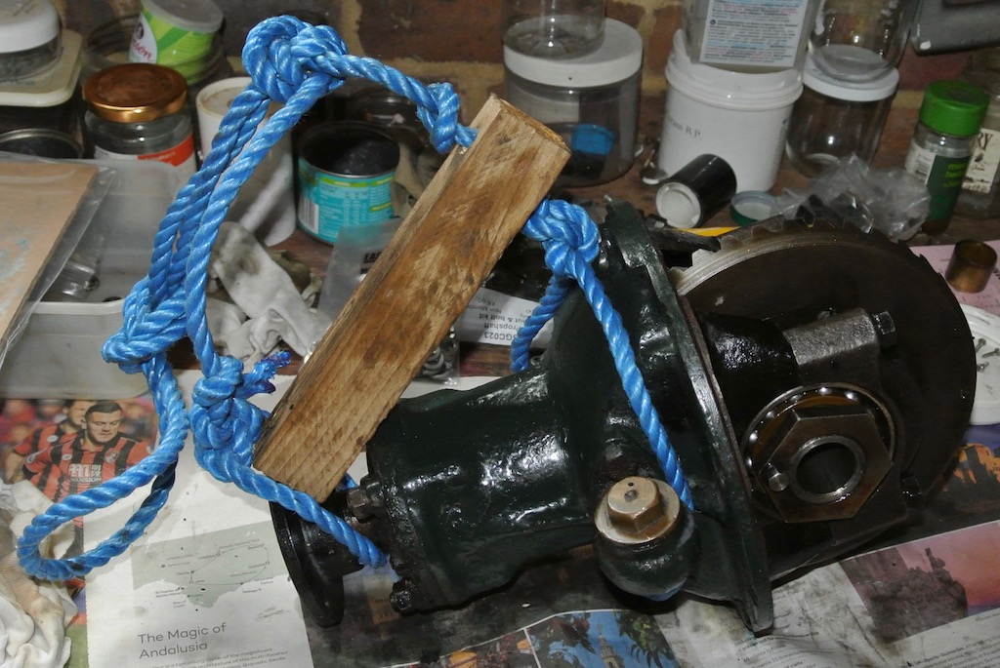The replacement of the nuts that hold the bearings to the rear axle is described here, where it is mentioned that I felt the need to inspect the differential so as to check that the damage on the half shaft splines was not replicated on the differential gears on the spider. There had also been a slight oil leak from the differential since I have owned TC4985, which seemed to be coming from the gasket between the differential and the banjo on the axle.
Freeing the differential from the prop shaft and the rear axle was straightforward. However, I'd not appreciated just how heavy the differential is. While lying on the ground under the car, the differential, with me holding it, made a 'controlled fall' to the ground (actually on to some folded corrugated cardboard).
Getting the differential back, however, was quite another matter. I didn't have the strength to lift it from below or lower it from above. As can be seen in the photo, I even constructed a rope harness to help lower the differential, but could not then manoeuvre it into place. in the end I had to remove the spare wheel and luggage rack so that I could stand close up against the fuel tank. I also built a brick platform on to which I lowered the differential. From there I was able to lift the unit on to the studs.
What's more, I cured the oil leak as well.
Go to top.Door Catch
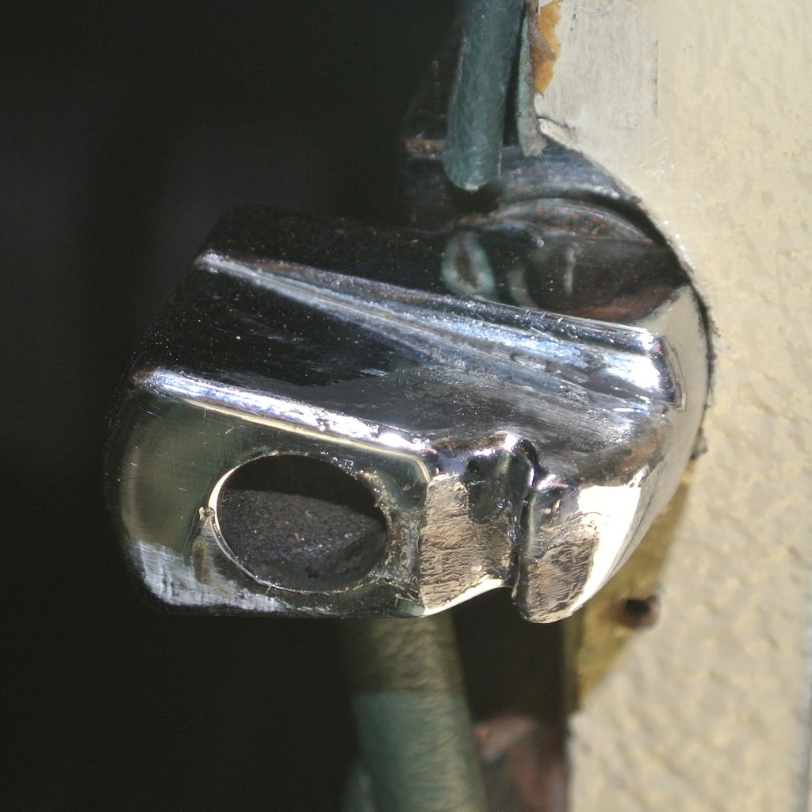The door catch on the TC (and I guess on the TA and TB also, and possibly the TD) has a main catch, plus a safety catch. The retractable cylinder, with the angled end, in the door handle mechanism drops into a hole in the catch that is mounted on the front door pillar. If the cylinder comes out of the hole in the catch then the door is prevented from flying open by a groove in the catch into which the angled end of the cylinder will fit. Both the hole and the groove can be seen in the photo.
In May 2018 I noticed that the driver's door latch was only catching in the groove, no matter how hard I slammed it. Perhaps it has been like this since I bought the car!
I had expected the whole catch to be adjustable on some form of screw. However, the only way to adjust the catch is to remove wood or pack out the cut-out in the pillar. So I removed some of the wood, finding a broken screw behind the catch in the process. The door now closes securely, although it does need to be slammed quite hard.
Go to top.Mirrors
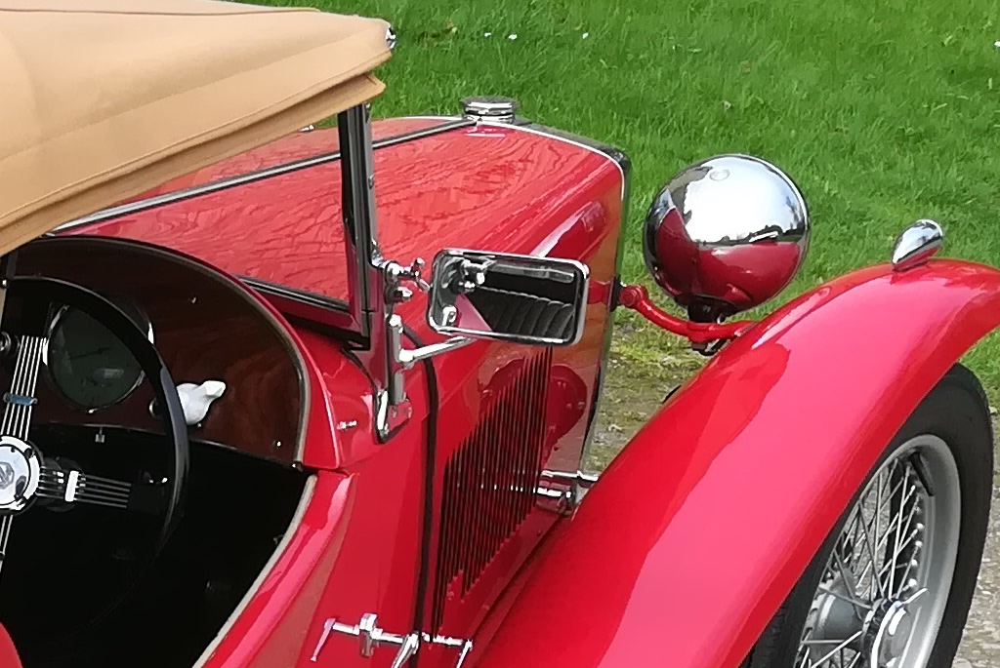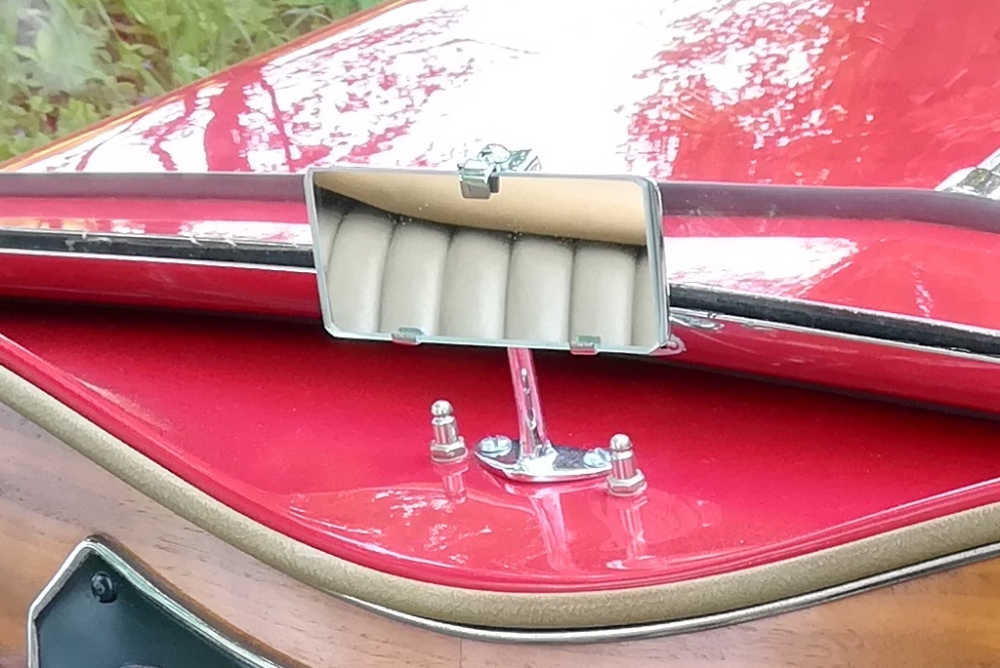Neither the interior rear view mirror nor the window mirrors on TC4985 are 'standard issue'. These two small photos show examples of TC mirrors. The interior mirror is bolted to the scuttle top and the exterior mirrors are bolted to the windscreen supports. On TC4985, the interior mirror is attached to the windscreen by a rubber sucker, but provides a good rear view. The exterior mirrors are fixed to arms that are bolted into the windscreen lowering channel and the mirrors themselves are smaller than the originals.
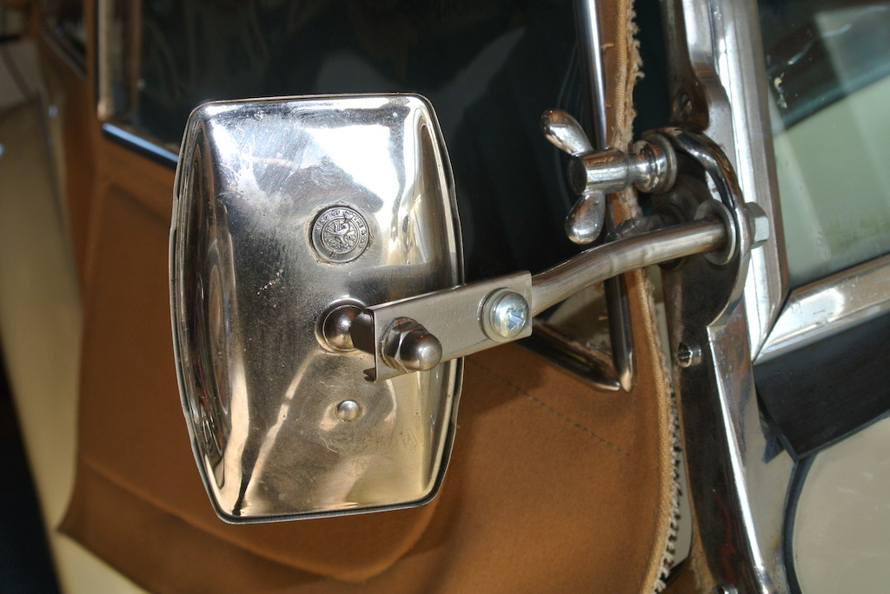This creates two problems. Firstly, it is now not possible to lower the windscreen; perhaps not a serious issue. Secondly, the arms are not very long and the mirror, which is fixed to the arm via a ball joint, is knocked by the side screen when the door is opened and closed.
My original intent was to remove these two window mirrors and fit an original style mirror on the driver's side, there being no holes for a mirror on the passenger side. However, the cheapest new mirror and arm that I can find is £186, which seems a little extravagant! So I decided to try to improve the situation by making extensions to the arms from some scrap sheet stainless steel. I made one for each side and you can see one here. However, they are still not quite long enough!
Go to top.Bonnet Prop
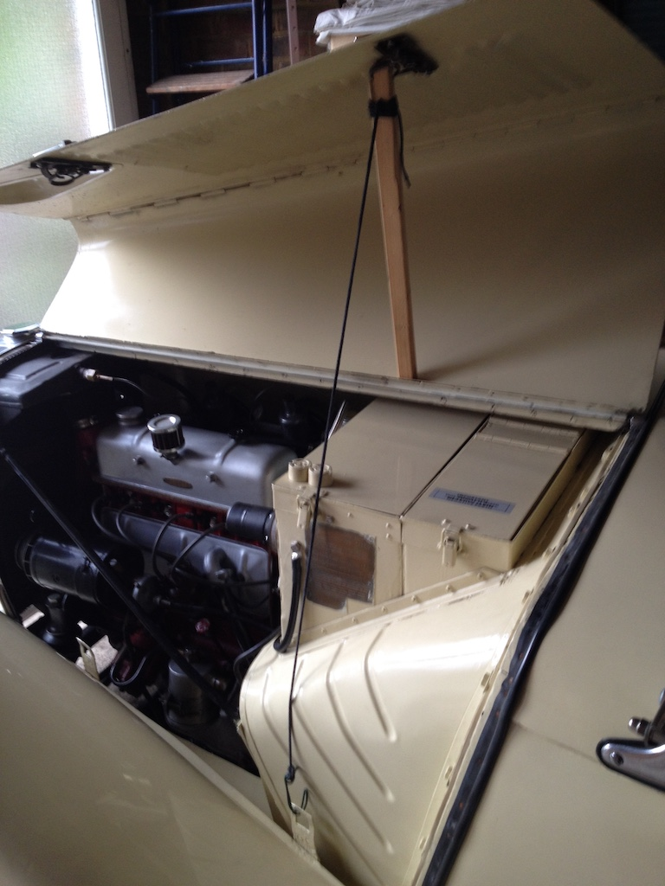TC4985 came with two rubber door stops bolted to the top of the battery box on the near-side and to the tool box on the off-side. Each door stop has a slot cut in the top so that the bottom edge of the bonnet can drop into it. The near-side pair can be seen in the photo.
These work well, but they provide only limited access to the engine bay. Consequently, if more access is needed I had been laying a thick dust sheet on the bonnet and folding one side of the bonnet over. However, several people have provided details in various forums of their alternative bonnet props. One that I liked was simply a piece of wood and a length of wire. I initially used a piece of plastic coated wire, but decided to change it to a length of string (I used a boot lace), so that it can be wound around the wooden stick for easy storage. The top of the stick fits into the bonnet latch spring.
One day I might replace the stick with a piece of hardwood so that it looks more in keeping with the car.
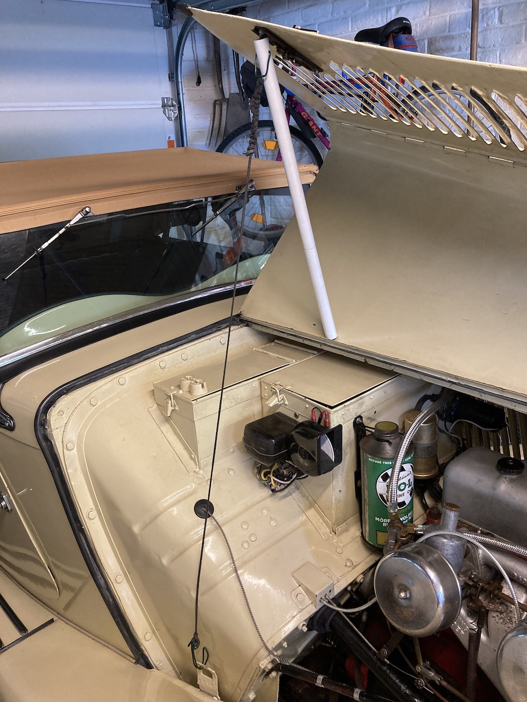A polished piece of hardwood might have looked better, but I saw a suggestion of using a piece of plastic tube that would fit over the bonnet lock. So I joined a couple of shorter pieces of tube and made this. It works very well.
Go to top.© David James 2023 Last updated: 29th August 2023